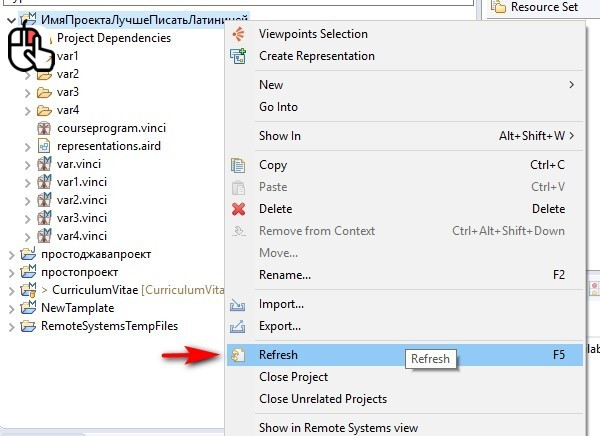
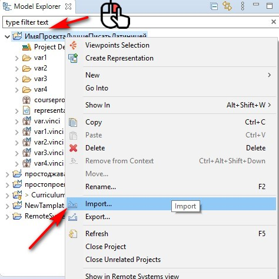
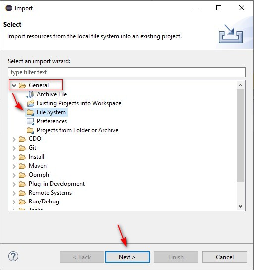
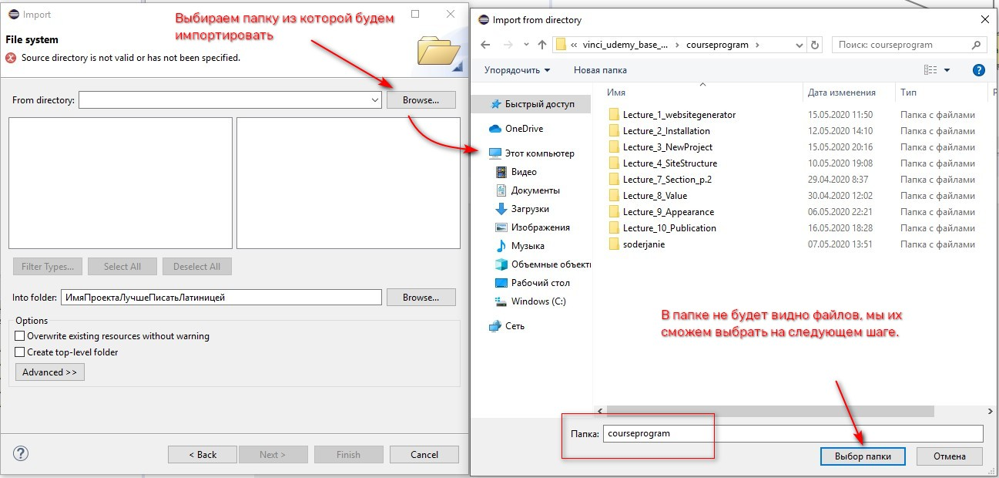
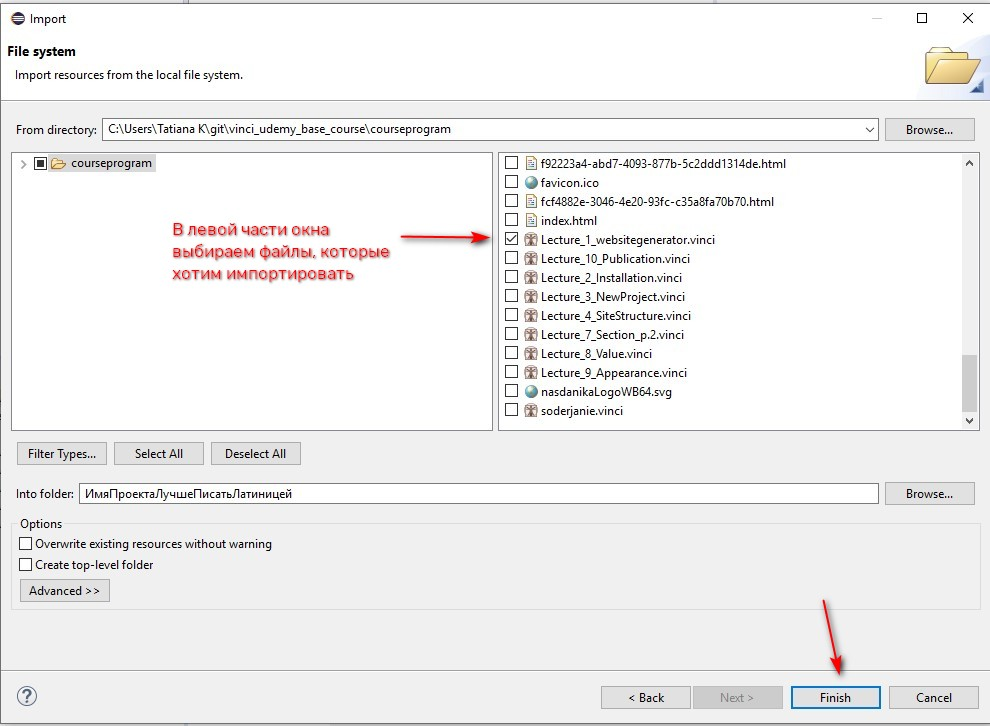

Большие проекты, как правило, разрабатываются не одним человеком, а целой группой людей. Так как Nasdanika Vinci явяется частью IDE Eclipse, то мы можем использовать весь арсенал инструментов для командной работы, который есть в этой среде разработки.
Командная работа в Nasdanika Vinci упрощается за счет того, что генератор может собирать сайт не из одной, а из нескольких взаимосвязанных моделей, каждая из которых может разрабатываться отдельным человеком.
Например, перед нами стоит задача: создать сайт, описывающий все бизнес-процессы предприятия и включающий в себя все должностные инструкции исполнителей этих бизнес-процессов.
Очевидно, что после разработки общей структуры сайта целесообразно детализацию каждого конкретного раздела поручить специалистам, которые хорошо знакомы с процессом и имеют доступ к актуальным должностным инструкциям. Для этого люди “на местах” могут разработать собственные модели, которые затем будут связаны с основной, центральной моделью.
Итак, представим себе ситуацию, что какие-то либи разработали собственные модели и прислали их нам, как файлы. Нам необходимо собрать эти файлы в единый проект. У нас есть три способа сделать это:
Мы должны понимать, что в области Model Explorer действуют те же правила и доступны те же операции, что и в файловой системе компьютера. То есть, мы можем выделить папку проекта и вставить в него какие либо файлы из буфера обмена.
То же самое мы можем сделать в файловой системе, но тогда Eclipse “не увидит” эти файлы, пока мы не обновим проект или ту папку, в которую они были добавлены. Обновить папку можно через контекстное меню, либо нажав кнопку F5.

Для того чтобы импортировать проект, в контекстном меню необходимо выбрать пункт Import.

В диалоговом окне открываем пункт General находим пункт File system.
Далее программа просит указать: из какой папки мы хотим импортировать файлы. Выбираем папку.

Нажимаем кнопочку Next и в файловой системе выбираем файл, который хотим импортировать.
 
Таким же образом мы можем импортировать файл любого типа: изображения, стили и так далее.